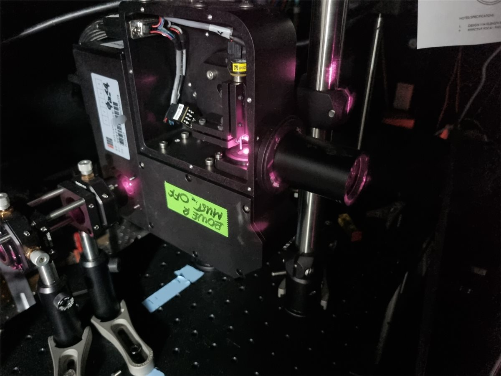
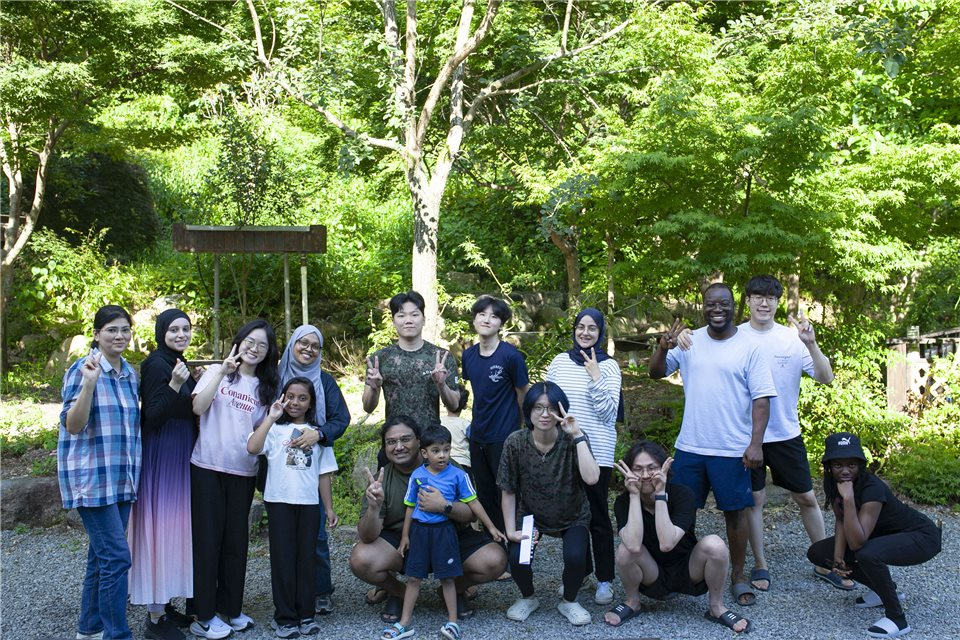

Using light to study the nervous system
At GIST, we develop optical tools to image and modulate the nervous system. We combine these tools with computational methods to understand neurological disease.

Research areas
Recent publications
All publications-
Brain Stimulation · 2026
High-fidelity transcranial ultrasound multi-focal stimulation via physics-aware hologram technique -
Biomedical Optics Express · 2026
Dual-scale and dual-channel oblique plane microscopy for multi-resolution imaging of large tissue specimens -
Cornea · 2026
A Novel Interferometric Device for Measurement of Tear Film Lipid Layer Thickness in Mice
Latest news
All news